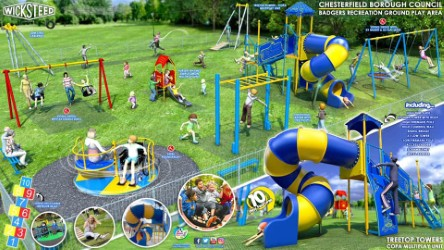
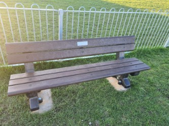
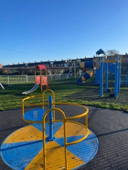
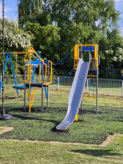

2020
Where it all began
Friends of the Badger Park was formed
Friends of the Badger Park was formed with one clear goal: to help replace the playground equipment that was due for demolition in August 2020.
Since 2020, local people have helped Friends of the Badger Park turn ideas into real improvements for everyone who uses the park.
Friends of the Badger Park was formed with one clear goal: to help replace the playground equipment that was due for demolition in August 2020.
FOBP managed to raise over £8,000. Later came the news we had been hoping for: Chesterfield Borough Council confirmed that Badger Park would get a new playground.

The new playground was finished — a fantastic achievement made possible by fundraising and support from the local community.


The playground slide was replaced after the original was burned due to vandalism.
FOBP also proposed a walking path between Brockwell Lane and Newbold Back Lane. With strong community support, the proposal was accepted and the path was installed in March 2025.


After a number of incidents of vandalism and damage to equipment at the park, a CCTV camera was installed to help protect the facilities.